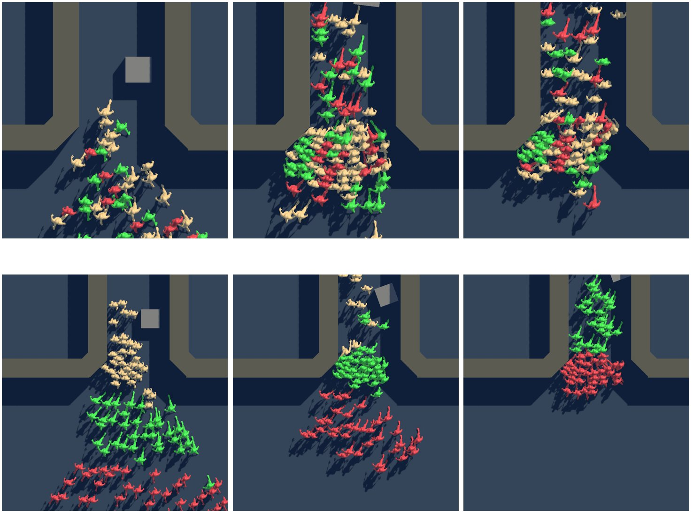

2025 · KCGS 2025 포스터 · AI 군중 시뮬레이션
군중 시뮬레이션 연구
스스로 움직여 흐름을 나누는 동적 울타리로 7000명 대피 시간을 24.6% 줄인 연구와, 군중의 감정이 퍼져 나가는 과정을 AI로 시뮬레이션한 연구입니다.

① 자율 주행 울타리를 이용한 군중 흐름 제어 (KCGS 2025 포스터)
고밀도 군중 상황에서는 고정된 울타리가 오히려 흐름을 막을 수 있습니다. 이 연구는 실시간 밀도에 반응해 스스로 자리를 옮기는 동적 울타리를 제안했습니다.
실험 · 이태원 사고 지점의 H형 골목을 그대로 모델링하고(왼쪽 도로는 5m 더 높은 경사), 울타리 없음, 고정 울타리, 동적 울타리 세 조건에서 4000~7000명이 골목을 빠져나가는 시간을 비교했습니다. 동적 울타리 6개는 평소엔 흐름을 방해하지 않는 곳에 있다가, 밀도가 1㎡당 4명 이상이 되면 스스로 이동해 세 가지 포메이션을 10초 간격으로 바꾸며 방향별 흐름을 차례로 풀어주고, 2명 미만이 되면 원래 자리로 돌아갑니다.
결과 · 7000명 상황에서 통과 시간이 울타리 없음 7.29분, 고정 울타리 8.17분, 동적 울타리 5.50분으로, 동적 울타리가 대피 시간을 24.6% 줄였습니다. 혼잡 구간을 효과적으로 분산할 수 있음을 보였고, 다음 단계로 심층강화학습으로 울타리가 상황에 맞는 포메이션을 스스로 고르게 하는 연구를 제안했습니다.
연구실의 대규모 군중 시뮬레이션 프로젝트(GPU 기반 실시간 군중, 물리 기반 인체 시뮬레이션, 경사로 넘어짐 사고 재현)와 함께 진행한 연구입니다. 대표 이미지는 연구실의 관련 연구 ‘개인별 속도차를 반영한 물리 기반 군중 탈출 시뮬레이션’(KCGS 2024) 결과입니다.
② 정서 기반 행동 반응 확산을 활용한 AI 군중 시뮬레이션 프레임워크
기존 군중 시뮬레이션은 충돌 회피와 경로 탐색 같은 물리적 이동에 집중해, 놀람이나 공포처럼 사람들 사이에 퍼져 나가는 감정은 담지 못합니다. 이 연구는 각 사람의 감정을 쾌–불쾌, 각성–이완 두 축으로 표현하고, 사건의 강도와 거리, 역할에 따른 민감도에 따라 감정이 바뀌어 주변 사람에게 번져 가는 정서 기반 행동 반응 확산(ASP) 모델을 군중 시뮬레이션에 적용했습니다.
방법 · 사용자가 장소와 인원을 입력하면 AI(규칙 기반 또는 LLM)가 언제, 어디서, 얼마나 강한 사건이 일어날지 담은 이벤트 계획서를 JSON으로 만들어 시뮬레이션에 넣습니다. 바뀐 감정은 이동 속도와 회피 반응, 표정과 제스처에 바로 반영되고, HUD와 감정 히트맵으로 감정이 공간에 퍼지는 모습을 보여 줍니다. 실제 신도림역 B1–B2 구조를 Unity 6로 모델링하고 NavMesh와 RVO로 층간 이동과 충돌 회피를 처리했으며, 가까이는 ReadyPlayerMe 아바타, 멀리는 단순 모델을 쓰는 LOD로 렌더링 부담을 줄였습니다.
내 역할 · 단독 저자로 모델 설계부터 구현, 시각화, 논문 작성까지 맡았습니다.